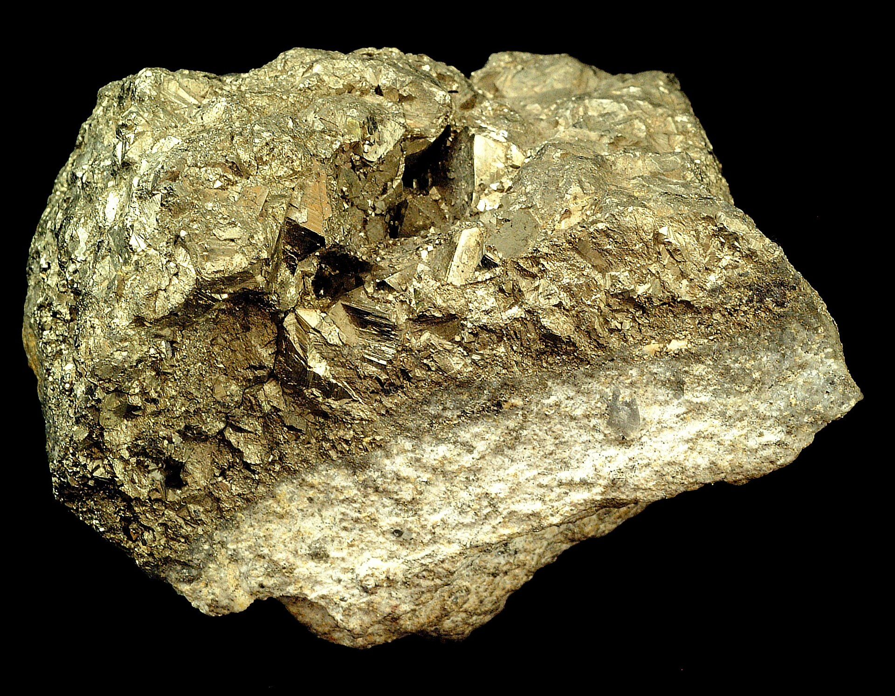

Balanites
Balanites występuje w dwóch odmianach: jednej zielonej lub zielonkawej; ¹ ² drugiej o barwie brązu lub mosiądzu, z płomienistą żyłą biegnącą pośrodku. ²
Opis ogólny
Opis
Balanites występuje w dwóch odmianach. ¹ ² Jedna jest zielona lub zielonkawa. Druga przypomina brąz lub mosiądz, a przez jej środek biegnie płomienista żyła.
Odmiany
| Podtyp | Wygląd |
|---|---|
| Podtyp I: Zielony Balanites ² | Zielony lub zielonkawy. ¹ |
| Podtyp II: Brązowa odmiana Balanites z płomienistą żyłą ¹ | Przypomina brąz lub mosiądz; przez środek przebiega płomienista żyła. ² |
Podtyp I: Zielony Balanites
Zdjęcie przedstawia okaz garnieritu, nr GeoDIL 2526 (źródło).

Odmiana zielona jest zielonkawa. ¹ ²
Podtyp II: Brąz Balanites z ognistą żyłą

Zdjęcie przedstawia okaz pirytu, nr GeoDIL 1040 (źródło).

Ta odmiana przypomina brąz lub mosiądz, a przez jej środek biegnie płomienista żyła. ¹ ²
Źródła
1. Św. Izydor z Sewilli — Etymologie XVI. xv.10
Balanites występuje w dwóch rodzajach; jeden zielonkawy, drugi podobny do brązu korynckiego, przedzielony pośrodku żyłką płomienia.
2. Camillo Leonardi — Speculum Lapidum
Balanites to kamień dwóch rodzajów: jeden jest zielony, drugi w kolorze mosiądzu z płonącą żyłką przebiegającą przez jego centrum.